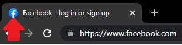

W3schools Is a perfect for beginners curious to see how deep the water Is!
They offer a large variety of tutorials on HTML, CSS, Javascritpt, Python, and much more!
Stackoverflow Is the ideal place to seek help for more advanced problems
Am I Responsive? Is a great way to see if the website is responsive on other devices
Html Checker & CSS Validation Service will run over your code and see if it's Valid!
as most computers are programed in a specific way dealing with the root of most things can cause issues and so they are very picky on how we setup our code!
FontAwesome Is a fantastic site that lets you import icons, such as social icons and link them up
Favicon is another great tool to use it gives your site those finishing touches with it's own icon on the top like this:
